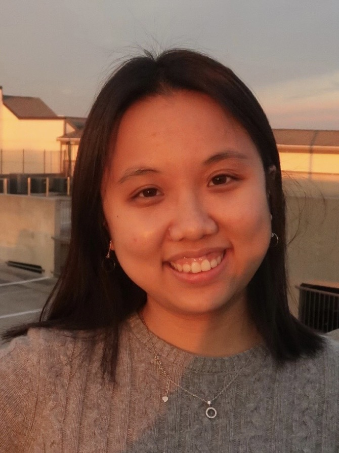

I’m a fifth-year PhD candidate in Information Studies at the University of Maryland’s College of Information (INFO), where I work with my advisor Dr. Ge Gao. I am a mixed-methods human-computer interaction (HCI) researcher studying human agency in AI-assisted language use. I am driven by a vision where people develop the full capacity of their language use, to express authentic voices, connect meaningfully with others, and participate in how we collectively create culture.
Towards this vision, I examine mechanisms of how human-AI interaction shapes the way people exercise and develop language capabilities as a communicative, cognitive, and relational resource. My work combines empirical research and system building through a social science perspective, to advance understanding of how human language capacity unfolds and evolves alongside AI systems, and to develop concrete design approaches that support people in directing their own language development and engagement with AI.
I came to my PhD research with a background in both information and language sciences. I obtained my MS in Applied Data Science and MA in Linguistic Studies from Syracuse University. I completed my undergraduate studies at Shanghai International Studies University (SISU, 上海外国语大学) with a Bachelor of Management in Information Management and Systems and BA in English.
I consider research as one of the many ways I connect with myself, life, and the world. Over the years of my PhD, I have been growing my collection of artsy hobbies: journaling, reading, drawing and painting (gouache and watercolor), photography, knitting, crocheting, sewing, embroidery, clay crafting, piano, and dancing. Across all these hobbies, I have come to realize that I enjoy the process of learning the "language" of a new art domain, just as much as I enjoy using it to experience and create art.
I can be reached at yxiao[at]umd[dot]edu.

© 2026 Yimin Xiao. All rights reserved.